Adresse :
M.A. Aziz-Alaoui
LMAH,
FR-CNRS-3335,
Université du Havre Normandie,
25 Rue Ph. Lebon, BP:540,
76058 Le Havre Cedex, (Normandie) France.
Adresse :
M.A. Aziz-Alaoui
LMAH,
FR-CNRS-3335,
Université du Havre Normandie,
25 Rue Ph. Lebon, BP:540,
76058 Le Havre Cedex, (Normandie) France.

Various Animations of Attractors or patterns
Below, I run different patterns or attractors that we found in differential equations (PDE or ODE) or discrete mappings ... : |
|||||||||||||||||
Predator-prey diffusif model, rectangular domain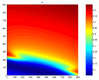
Spatial dynamics (and patterns), on a square domain, of a predator-prey diffusif model with Holling-type-II and a modified Leslie-Gower functional responses.
The renderings are based on models of reaction-diffusion equations which express
conservation of predator and prey densities, it has the following form :
\frac {\partial H}{\partial T} = D_1\Delta H + ( a_1 - b_1H -\frac{c_1P}{H+k_1} H
\frac{\partial P}{\partial T} = D_2 \Delta P + a_2 - \frac{c_2P}{H+k_2} P
Spatial dynamics (and patterns), on a circular domain, of te same predator-prey diffusif model.
See:
For this functionnal response :
- Aziz-Alaoui M.A. (2002),
Study of a Leslie-Gower-type tritrophic population model
Chaos Sol. & Fractals, Vol. 14(8), pp: 1275-1293,
See also :
- Aziz-Alaoui M.A. and Daher M.O.(2002),
On the dynamics of a predator-prey model with the Holling-Tanner functional response,
book-chapter in Mathematical Modelling and Computing in Biology
and Medecine, MIRIAM Editions, Editor V. Capasso,
pp: 270-278, (2002).
- Aziz-Alaoui M.A. and Daher M.O.(2003),
Boundedness and global stability for a predator-prey model with
modified Leslie-gower and Holling-type II schemes,
Applied Math. Lets. Vol. 16(7), pp. 1069-1075,
- The theses of two of my former PhD students (B. Camara and Daher M.O.).
- Camara B.I. and Aziz-Alaoui M.A. (2009),
Turing and Hopf Patterns Formation in a Predator-Prey Model with Leslie-Gower-Type Functional Response,
Dynamics of Continuous, Discrete and Impulsive Systems, series B,
Vol. 16(4), pp: 479-488.
- Camara B.I. and Aziz-Alaoui M.A. (2008),
Dynamics of a Predator-prey model with diffusion,
Dynamics of Continuous Discrete and Impulsive Systems, Series A : Mathematical Analysis,
Vol. 15, pp: 897-906.
- Camara B.I. and Aziz-Alaoui M.A. (2008),
Complexity in a prey predator model, ARIMA,
Vol. 9, pp: 109-122.
See:
- The thesis of one of my former PhD students (N. Corson).
- Corson N., Aziz-Alaoui M.A. (2009),
Asymptotic Dynamics for Slow-Fast Hindmarsh-Rose Neuronal System,
Dynamics of Continuous, Discrete and Impulsive Systems, series B,
Vol. 16(4), pp: 535-549,
- Corson N., Aziz-Alaoui M.A. (2009),
Complex emergent properties in synchronized neuronal oscillations,
book chapter, in : From System Complexity to Emergent Properties, A.-A. M. and C. Bertelle (eds.): Understanding Complex Systems, Springer-Verlag, Heidelberg, pp 243-259,
- Corson N., Balev S., Aziz-Alaoui M.A. (2010),
Detection of Synchronization Phenomena in Networks of Hindmarsh-Rose
Neuronal Models,
Proc. of EPNACS'2010, ECCS'10 European Conference on Complex Systems,
Lisbon (Portugal), 13-17 septembre 2010, pp: 1-6,
- Corson N., Balev S., Aziz-Alaoui M.A. (2011),
Burst Synchronization of Coupled Oscillators, Towards Understanding the Influence of the Network Topology,
Proc. of EPNACS'2011, Vienna (Autriche), 11-16 septembre 2011, pp: 3-9,
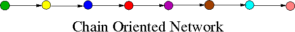 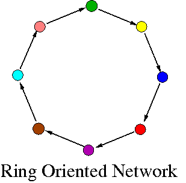 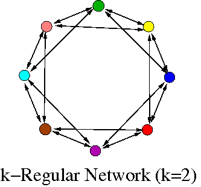 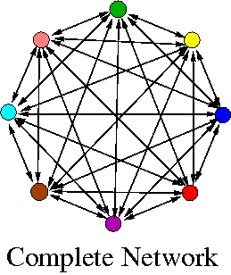
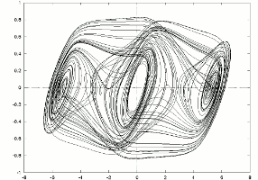
See my paper :
in the
Int. Journ. of Bifurcation and Chaos 9(6), 1009-1039, (1999),
(IJBC).
The state equations of Chua's system are
given by
dx/dt = alpha.[y-x-f_2(x)],
dy/dt = x - y + z,
dz/dt = -beta.y -gama.z,
where x, y and z are functions of t,
f_2(x)= m_1.x + (1/2)(m_0-m_1)[|x+1|-|x-1|]
is the Chua's nonlinearity, which is, here, modified to get multispiral
attractors, and alpha, beta, gama, m_1 and m_2 are the parameters of the system.
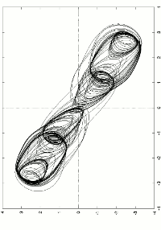
See my paper :
in the
Int. Journ. of Bifurcation and Chaos 9(6), 1009-1039, (1999),
(IJBC).
The state equations I used are given by :
dx/dt = y - f_2(x),
dy/dt = -alpha*(x + y) +alpha*K*sin(2*PI*Omega*t),
where x and y are functions of t,
f_2(x)= m_1.x + (1/2)(m_0-m_1)[|x+1|-|x-1|]
is the Chua's nonlinearity, which is, here, modified to get multispiral
attractors, and alpha, K, Omega, m_0 and m_1 are the parameters of the system.
See : "Enhancing Chaos in some New Class of Dissipative Dynamical Systems" (Aziz-Alaoui M.A.
unpublished paper, 2001).
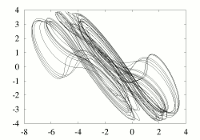
See HERE .
The state equations are
given by
x''' + A x'' + x' = G(x),
that is :
dx/dt = y ;
dy/dt = z ;
dz/dt = -A z + y + G(x) ;
where x, y and z are functions of t,
is the nonlinearity I used and modified to get multispiral
attractors ...
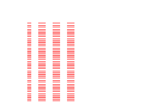
Appearance of the strange attractor of the mapping which we study in the references cited below (it is a mapping of the type Hénon-Lozi).
To see the effect of repeated application of this transformation, we take an arbitrary shape (a square digitized by an array of 100 by 100 regularly spaced points), and apply the transformation iteratively, (1, 2, 3, 4, 5, 6, 7, 8, 9, 10, 11, 12 times). The square is fastly deformed, after a few iterations the attractor becomes recognizable. The following iterations do not have any effect on it . It is a subset of the plane which is invariant with respect to the transformation.
See the papers:
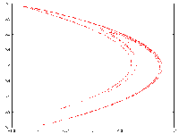
Abstract
We present and analyze a modified version of Hénon map. Hénon [1976] studied the following map :
x_{n+1} = y_n+1-a.x_n^2 ,
y_{n+1} = b.x_n
(a and b are the parameters). By modifying the nonlinear term of this map,
we obtain some new strange attractors with many folds
(interest: secure communication for example ... ! ).
The animation shows first
the classical Hénon attractor,
then
a 2-folds strange attractor exhibited by the modified Hénon's map, then
a 3-folds strange attractor, then
a 4-folds strange attractor.
unpublished papers (published on this site in 1998),
See HERE.
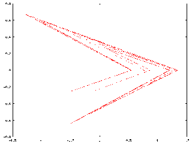
Abstract
We present and analyze a modified version of Lozi map. Lozi [1978] studied the following map :
x_{n+1} = y_n+1 - a.|x_n| ,
y_{n+1} = b.x_n
(a and b are the parameters). By modifying the nonlinear term of this map,
we obtain some new chaotic attractors with many folds
(interest: secure communication for example ... ! ).
The animation shows first
the classical Lozi attractor,
then
a 2-folds strange attractor exhibited by the modified Lozi's map, then
a 3-folds strange attractor, then
a 4-folds strange attractor.
unpublished papers (published on this site in 1998),
See HERE.
| |||||||||||||||||